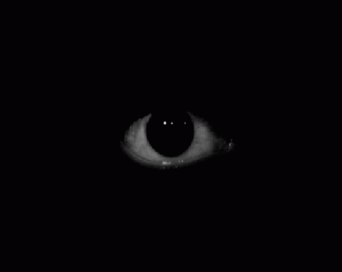
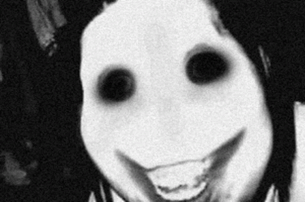
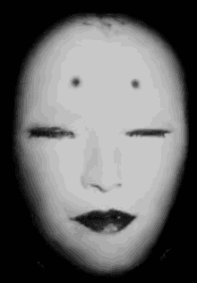
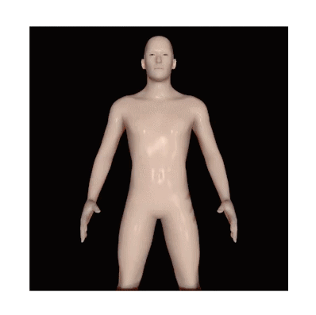
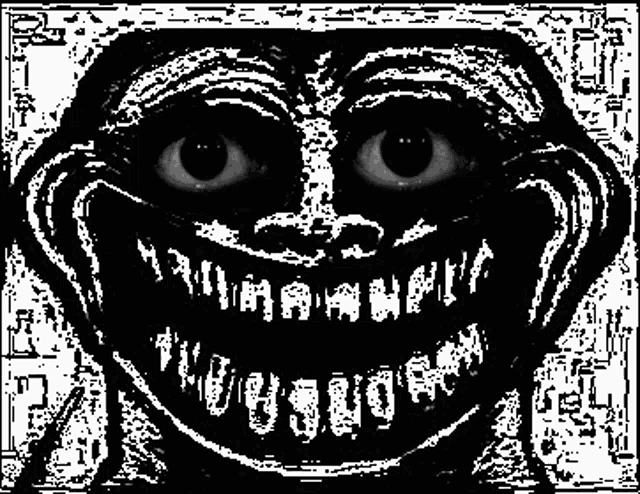
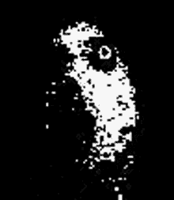

Unfirmial 34
Once, long ago in 2011, a minecraft player wanted to install the Beta 1.8.1
version, but only Beta 1.8.1_03 was available in his launcher. Despite this,

strange things began to happen in his game. Loud sounds, graphic bugs, incomprehensible
whispers occurred in his game. However, he continued to play, his game was

closed, the desktop was painted red, all the icons were removed, A## TH## IT C#ME
A##ER H#M A#D T#OK H#M. His game became reasonable,

it was able to develop and improve. IT W#NT OU##IDE H#S COM###ER A#D CRU##ED H#S W##LD

Download
